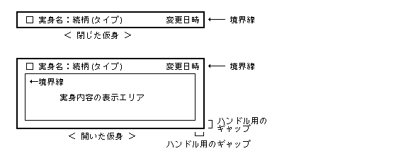
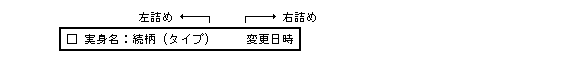

Специфікація BTRON3 (Український переклад) | Специфікація ОС Sakamura BTRON / BTRON3
Повернутися до змісту розділу Графічної оболонки
Попередня сторінка: 3.7 Примітиви вводу тексту (Повернутися)
Наступна сторінка: 3.9 Менеджер шрифтів (Перейти)
Менеджер Реальних та Віртуальних об'єктів реалізує фундаментальну концепцію BTRON:
модель Реальний об'єкт (Реальний об'єкт, Jisshin) / Віртуальний об'єкт (Вітуальний об'єкт, Kashin).
Реальний об'єкт — це файл-носій даних, а Віртуальний об'єкт — графічне посилання
на нього, через яке користувач взаємодіє з даними.
Крім того, менеджер надає функції реєстрації та видалення прикладних програм.
Усі прикладні програми запускаються через нього.
Функції менеджера:
- Відображення та управління Віртуальними об'єктами
- Відображення та управління Наліпками (, Fusene)
- Управління прикладними програмами (реєстрація / видалення / запуск)
- Налаштування меню
- Управління підключенням файлових систем
- Інші прикладні функції
«Реальний об'єкт» (Реальний об'єкт) — сукупність даних, що один до одного відповідає реальному
файлу на носії. «Віртуальний об'єкт» (Вітуальний об'єкт) — ярлик-посилання на нього; один Реальний
об'єкт може мати кілька Віртуальних. «Непрямий Віртуальний об'єкт» (Вітуальний об'єкт) —
посилається на Реальний об'єкт на іншому пристрої через файл-посилання.
«Відключений об'єкт» (, Kyoshin) — непрямий об'єкт, пристрій якого зараз відключений.
 Мал. 114 : Реальний / Віртуальний / Відключений об'єкт
Мал. 114 : Реальний / Віртуальний / Відключений об'єкт
Існують «закритий Віртуальний об'єкт» (Вітуальний об'єкт) — відображає лише метаінформацію,
та «відкритий Віртуальний об'єкт» (Вітуальний об'єкт) — показує вміст Реального об'єкта.
Закритий об'єкт: горизонтальний прямокутник з піктограмою, іменем, відношенням (),
типом та датою зміни. Відкритий об'єкт: розширює закриту форму вниз, додаючи зону
відображення вмісту Реального об'єкта.

Мал. 115 : Відображення Віртуального об'єкта

Мал. 116 : Рядок заголовка Віртуального об'єкта
 Мал. 117 : Приклади рядка заголовка
Мал. 117 : Приклади рядка заголовка
Меню «Вітуальний об'єкт» (Операції з Віртуальним об'єктом):
| (1) | Відкрити | відкрити |
| (2) | Закрити | закрити |
| (3) | Видалити | видалити |
| (4) | Копіювати до лотка | трей: копіювати |
| (5) | Перемістити до лотка | трей: перемістити |
| (6) | Змінити ім'я | ім'я |
| (7) | Змінити відношення | відношення |
| (8) | Змінити текст заголовка | текст заголовка |
| (9) | Змінити розмір символів | розмір символів |
| (10) | Змінити колір | колір |
| (11) | Показати інформацію | інформація |
| (12) | Створити нову версію | нова версія |
| (13) | Відключити | відключити |
| (14) | Відкрити у вікні | відкрити у вікні |
| (15) | Вставити дані з лотка | записати з лотка |
| (16) | Підключити | підключити |
| (17) | Показати стан диска | стан |
| (18) | Дефрагментація | ---- |
| (19) | Запустити утиліту | (назва утиліти) |
/* Константи режиму відображення */
V_NODISP -- Не відображати
V_DISP -- Відобразити (зона вмісту заповнюється кольором фону)
V_DISPALL -- Відобразити (зона вмісту через відповідний додаток)
V_DISPAREA -- Лише зона вмісту (без рамки)
V_ERASE -- Стерти (заповнити кольором фону вікна)
V_NOFRAME -- Рамка пунктиром (для внутрішніх об'єктів)
V_ERAORG -- Стерти вихідну позицію при переміщенні
/* Константи трансформації */
V_SIZE -- Трансформувати до вказаного прямокутника
V_OPEN -- Відкрити до розміру за замовчуванням
V_CLOSE -- Закрити
V_CHECK -- Лише повернути поточний прямокутник
/* Константи атрибутів (ochg_sts) */
V_GETSTS 0x8000 -- Отримати поточний стан без змін
V_PURGE 0xFFFF -- Скинути збережений образ відображення
V_CHKREF 0x8888 -- Перевірити посилання на Реальний об'єкт
V_CHKDUP 0x9999 -- Перевірити посилання на файл
V_NONAME 0x0001 -- Не відображати ім'я
V_NORELN 0x0002 -- Не відображати відношення
V_NOTYPE 0x0004 -- Не відображати тип даних
V_NOTIME 0x0008 -- Не відображати дату зміни
V_FIXDEF 0x0010 -- Фіксований додаток за замовчуванням
V_NOIMG 0x0020 -- Не зберігати образ відображення
V_NOPICT 0x0040 -- Не відображати піктограму
V_NOFDISP 0x0080 -- Не відображати рамку
V_NOEXPND 0x0200 -- Не розгортати під час друку
V_AUTEXE 0x4000 -- Автоматичний запуск
Ці функції надаються як розширені системні виклики оболонки.
При помилці повертається від'ємний код. При успіху — «0» або «+».
| oreg_vob |
| Register Virtual Body |
| Реєстрація Віртуального об'єкта у вікні |
|
【Синтаксис / Прототип】
VID oreg_vob(VLINK *vlnk, VP vseg, W wid, UW disp)
【Параметри】
VLINK *vlnk Посилання на Реальний об'єкт (NULL — реєстрація Наліпки)
VP vseg Сегмент Віртуального об'єкта (VOBSEG) або Наліпки (FUSENSEG)
W wid ID вікна (>= 0), або -(ID середовища малювання) при wid < 0
UW disp Режим: V_NODISP | V_DISP | V_DISPALL | V_DISPAREA | [V_NOFRAME] | [V_AUTEXE]
【Значення, що повертається】
>= 0 ID Віртуального об'єкта (vid > 0)
< 0 Помилка (Код помилки)
【Детальний опис】
Реєструє Віртуальний об'єкт vseg для посилання vlnk
у вікні wid. Повертає ID об'єкта (vid > 0).
При wid < 0 — реєстрація у середовищі малювання (-wid).
При vlnk = NULL — реєструється Наліпка (vseg вказує на FUSENSEG).
Якщо файлова система відключена і немає інших-об'єктів — відображається
«Панель підключення пристрою».
【Коди помилок】
EX_ADR : Недопустима адреса vlnk або vseg.
EX_LIMIT : Перевищено ліміт кількості об'єктів.
EX_NOSPC : Нестача пам'яті.
EX_PAR : Неприпустиме значення disp або вміст vseg.
EX_WID : Вікно (wid) не існує.
| b_odup_vob |
| Duplicate Virtual Body |
| Дублювання Віртуального об'єкта |
|
【Синтаксис / Прототип】
VID b_odup_vob(W org)
【Параметри】
W org ID Віртуального об'єкта-джерела
【Значення, що повертається】
>= 0 ID нового Віртуального об'єкта
< 0 Помилка (Код помилки)
【Детальний опис】
Реєструє новий Віртуальний об'єкт з тим самим вмістом, що й org.
Використовується переважно для операції копіювання.
【Коди помилок】
EX_LIMIT : Перевищено ліміт.
EX_NOSPC : Нестача пам'яті.
EX_VID : ID Віртуального об'єкта (org) не існує.
| odel_vob |
| Delete Virtual Body |
| Скасування реєстрації Віртуального об'єкта |
|
【Синтаксис / Прототип】
W odel_vob(W vid, W clr)
【Параметри】
W vid >= 0 : ID Віртуального об'єкта
< 0 : -(ID вікна) — видалити всі об'єкти вікна
W clr = 0 : не стирати область відображення
!= 0 : заповнити область кольором фону вікна
【Значення, що повертається】
>= 0 Кількість видалених об'єктів
< 0 Помилка (Код помилки)
【Детальний опис】
Видаляє реєстрацію Віртуального об'єкта vid.
При vid < 0 — видаляє всі об'єкти у вікні -vid
(крім зареєстрованих з wid < 0).
Об'єкти, зареєстровані з wid < 0, потрібно видаляти вручну по одному.
【Коди помилок】
EX_VID : ID Віртуального об'єкта (vid) не існує.
| ocls_wnd |
| Close Window (VObj cleanup) |
| Обробка закриття вікна |
|
【Синтаксис / Прототип】
ERR ocls_wnd(W wid)
【Параметри】
W wid ID вікна
【Значення, що повертається】
= 0 Успішне виконання
【Детальний опис】
Повідомляє менеджеру, що вікно wid закрито. Виконує видалення
реєстрацій об'єктів, скасування стану «в обробці» та оновлення даних.
Зазвичай викликається Менеджером вікон, а не прикладними програмами.
【Коди помилок】
Відсутні.
| odsp_vob |
| Display Virtual Body |
| Відображення / приховання Віртуального об'єкта |
|
【Синтаксис / Прототип】
W odsp_vob(W vid, RECT *r, UW disp)
【Параметри】
W vid >= 0 : ID Віртуального об'єкта
= 0x8000 : передача списку об'єктів
< 0 : -(ID вікна) — всі об'єкти вікна
RECT *r Область відображення (або вказівник на список при vid=0x8000)
UW disp V_ERASE | V_DISP | V_DISPALL | V_DISPAREA | [V_NOFRAME]
【Значення, що повертається】
>= 0 Кількість оброблених об'єктів
< 0 Помилка (Код помилки)
【Детальний опис】
Відображає або стирає Віртуальний об'єкт vid.
r — відносні координати видимої ділянки (NULL = вся область).
При vid = 0x8000 — r вказує на список структур:
W vid -- ID Віртуального об'єкта
RECT r -- Область відображення
: :
W 0 -- Кінець списку
【Коди помилок】
EX_ADR : Недопустима адреса r.
EX_PAR : Неприпустиме значення disp.
EX_VID : ID Віртуального об'єкта (vid) не існує.
EX_WID : Вікно (wid) не існує (тільки при vid < 0).
| odsp_vor |
| Display Virtual Body with Scale |
| Відображення Віртуального об'єкта з масштабуванням |
|
【Синтаксис / Прототип】
W odsp_vor(W vid, RECT *r, UW disp, PNT scal)
【Параметри】
W vid Аналогічно odsp_vob
RECT *r Область відображення
UW disp Режим (аналогічно odsp_vob)
PNT scal Коефіцієнт масштабування (scal.x — горизонт., scal.y — верт.;
0x100 = 1:1; 0 трактується як 0x100)
【Значення, що повертається】
>= 0 Кількість оброблених об'єктів
< 0 Помилка (Код помилки)
【Детальний опис】
Аналогічна odsp_vob(), але з масштабуванням за коефіцієнтом scal.
Впливає на координати, розмір символів, піктограму та образ зони вмісту.
【Коди помилок】
EX_ADR : Недопустима адреса r.
EX_PAR : Неприпустиме значення disp.
EX_VID : ID Віртуального об'єкта (vid) не існує.
EX_WID : Вікно не існує (при vid < 0).
| odra_vob |
| Draw Virtual Body Temporarily |
| Тимчасове відображення Віртуального об'єкта |
|
【Синтаксис / Прототип】
W odra_vob(GID gid, VP vseg, VLINK *vlnk, RECT *r, UW disp)
【Параметри】
GID gid ID середовища малювання
VP vseg Сегмент Віртуального об'єкта
VLINK *vlnk Посилання на Реальний об'єкт
RECT *r Область відображення
UW disp Режим відображення
【Значення, що повертається】
= 0 Успішне виконання
< 0 Помилка (Код помилки)
【Детальний опис】
Відображає Віртуальний об'єкт безпосередньо у середовищі малювання gid
без реєстрації. Використовується для тимчасового показу (напр. під час D&D).
【Коди помилок】
EX_ADR : Недопустима адреса vseg або r.
EX_PAR : Неприпустиме значення disp.
EG_GID : ID середовища малювання (gid) не існує.
| odra_vor |
| Draw Virtual Body with Scale |
| Тимчасове відображення Віртуального об'єкта з масштабуванням |
|
【Синтаксис / Прототип】
W odra_vor(GID gid, VP vseg, VLINK *vlnk, RECT *r, UW disp, PNT scal)
【Параметри】
GID gid ID середовища малювання
VP vseg Сегмент Віртуального об'єкта
VLINK *vlnk Посилання на Реальний об'єкт
RECT *r Область відображення
UW disp Режим відображення
PNT scal Коефіцієнт масштабування (0x100 = 1:1)
【Значення, що повертається】
= 0 Успішне виконання
< 0 Помилка (Код помилки)
【Детальний опис】
Аналогічна odra_vob(), але з масштабуванням на коефіцієнт scal.
【Коди помилок】
EX_ADR : Недопустима адреса vseg або r.
EX_PAR : Неприпустиме значення disp.
EG_GID : ID середовища малювання (gid) не існує.
| ofnd_vob |
| Find Virtual Body at Point |
| Пошук Віртуального об'єкта за координатою |
|
【Синтаксис / Прототип】
VID ofnd_vob(W wid, PNT pos, UW part, RECT *r)
【Параметри】
W wid ID вікна
PNT pos Координата пошуку (відносно вікна)
UW part Частина: V_PTITLE | V_PAREA | V_PHANDLE | V_PFRAME | V_PALL
RECT *r Буфер для прямокутника знайденого об'єкта (або NULL)
【Значення, що повертається】
> 0 ID знайденого об'єкта
= 0 Об'єкт не знайдено
< 0 Помилка (Код помилки)
【Детальний опис】
Шукає Віртуальний об'єкт у вікні wid, що містить точку pos.
part визначає, яка частина (заголовок, зона вмісту, ручка, рамка, весь об'єкт).
Якщо знайдено — у r записується прямокутник об'єкта.
【Коди помилок】
EX_ADR : Недопустима адреса r.
EX_PAR : Неприпустиме значення part.
EX_WID : Вікно (wid) не існує.
| omov_vob |
| Move Virtual Body |
| Переміщення Віртуального об'єкта |
|
【Синтаксис / Прототип】
ERR omov_vob(W vid, W wid, RECT *newr, UW disp)
【Параметри】
W vid >= 0 : ID Віртуального об'єкта
< 0 : -(ID вікна) — перемістити всі об'єкти вікна
W wid ID цільового вікна (0 = без зміни вікна;
0xFFFF8000 = тимчасове видалення)
RECT *newr Нова позиція (лівий верхній кут; виконання — фактичний прямокутник)
UW disp V_NODISP | V_DISP | V_DISPALL | V_DISPAREA | [V_ERAORG]
【Значення, що повертається】
= 0 Успішне виконання
< 0 Помилка (Код помилки)
【Детальний опис】
Переміщує об'єкт vid у позицію newr у вікні wid.
Розмір не змінюється; після виконання newr містить фактичний прямокутник.
При wid = 0xFFFF8000 — тимчасове видалення (для реалізації «скасування»);
відновити через omov_vob(), остаточно видалити через odel_vob().
【Коди помилок】
EX_ADR : Недопустима адреса newr.
EX_PAR : Неприпустиме значення disp.
EX_VID : ID Віртуального об'єкта (vid) не існує.
EX_WID : Цільове вікно (wid) не існує (при wid > 0).
| orsz_vob |
| Resize / Transform Virtual Body |
| Трансформація Віртуального об'єкта |
|
【Синтаксис / Прототип】
ERR orsz_vob(W vid, RECT *newr, UW mode)
【Параметри】
W vid ID Віртуального об'єкта
RECT *newr Новий прямокутник (вихід — фактичний після трансформації)
UW mode ::= (V_SIZE | V_ADJUST(1~3) | V_OPEN | V_CLOSE | V_CHECK)
| (V_NODISP | V_DISP | V_DISPALL | V_DISPAREA) | [V_ERAORG]
V_SIZE- Трансформувати до прямокутника newr.
V_ADJUST, V_ADJUST1..3- Підлаштувати ширину: увесь / до імені / до відношення / до типу.
V_OPEN- Відкрити до розміру за замовчуванням.
V_CLOSE- Закрити.
V_CHECK- Лише повернути поточний прямокутник.
【Значення, що повертається】
= 0 Успішне виконання
< 0 Помилка (Код помилки)
【Коди помилок】
EX_ADR : Недопустима адреса newr.
EX_PAR : Неприпустиме значення mode.
EX_VID : ID Віртуального об'єкта (vid) не існує.
EX_VOBJ : Стан/атрибути не дозволяють операцію.
| ochg_chs |
| Change Character Size |
| Зміна розміру символів заголовка |
|
【Синтаксис / Прототип】
W ochg_chs(W vid, W csize)
【Параметри】
W vid ID Віртуального об'єкта
W csize < 0 : показати «Панель зміни розміру символів»
>= 0 : новий розмір (одиниці CHSIZE)
【Значення, що повертається】
= 0 Без змін
= 1 Розмір змінено (потрібна перерисовка)
< 0 Помилка (Код помилки)
【Коди помилок】
EX_PAR : Неприпустиме значення csize.
EX_VID : ID не існує.
EX_VOBJ : Відключений стан або Наліпка.
| ochg_col |
| Change Color |
| Зміна кольору Віртуального об'єкта |
|
【Синтаксис / Прототип】
W ochg_col(W vid, COLOR fgcol, COLOR bgcol)
【Параметри】
W vid ID Віртуального об'єкта
COLOR fgcol Колір переднього плану (< 0 — показати панель вибору кольору)
COLOR bgcol Колір фону
【Значення, що повертається】
= 0 Без змін або скасовано
= 1 Колір змінено (потрібна перерисовка)
< 0 Помилка (Код помилки)
【Коди помилок】
EX_VID : ID не існує.
EX_VOBJ : Відключений стан (при fgcol >= 0).
| ochg_nam |
| Change Object Name |
| Зміна імені Реального об'єкта |
|
【Синтаксис / Прототип】
W ochg_nam(W vid, TC *name)
【Параметри】
W vid ID Віртуального об'єкта
TC *name Нове ім'я (NULL або порожній рядок — показати панель редагування)
【Значення, що повертається】
= 0 Без змін або скасовано
= 1 Ім'я змінено (потрібна перерисовка)
< 0 Помилка (Код помилки)
【Коди помилок】
EX_ADR : Недопустима адреса name.
EX_VID : ID не існує.
EX_VOBJ : Відключений стан або Наліпка.
| ochg_rel |
| Change Relation () |
| Зміна відношення () Віртуального об'єкта |
|
【Синтаксис / Прототип】
W ochg_rel(W vid, W index)
【Параметри】
W vid ID Віртуального об'єкта
W index < 0 : показати «Панель зміни відношення»
>= 0 : індекс нового відношення
【Значення, що повертається】
= 0 Без змін
= 1 Відношення змінено (потрібна перерисовка)
< 0 Помилка (Код помилки)
【Коди помилок】
EX_PAR : Неприпустимий index.
EX_VID : ID не існує.
EX_VOBJ : Відключений стан (при index >= 0) або Наліпка.
| onew_obj |
| Create New Version |
| Створення нової версії Реального об'єкта |
|
【Синтаксис / Прототип】
VID onew_obj(W vid, VLINK *vlnk)
【Параметри】
W vid ID Віртуального об'єкта
VLINK *vlnk Буфер для посилання на нову версію (або NULL)
【Значення, що повертається】
>= 0 ID Віртуального об'єкта нової версії / дублікату
< 0 Помилка (Код помилки)
【Детальний опис】
Створює нову версію (або дублює дискету). Відображається «Панель нової версії».
Новий Віртуальний об'єкт автоматично з'являється поруч з vid.
【Коди помилок】
EX_ADR : Недопустима адреса vlnk.
EX_LIMIT: Забагато файлів.
EX_VID : ID не існує.
EX_VOBJ : Стан «в обробці» або Наліпка.
| ocre_obj |
| Create New Real Body |
| Створення нового Реального об'єкта |
|
【Синтаксис / Прототип】
W ocre_obj(W vid, TC *name, W *nvid, LINK *lnk, W copy)
【Параметри】
W vid ID Віртуального об'єкта (визначає цільовий пристрій)
TC *name Ім'я нового об'єкта (порожній рядок — показати панель вибору)
W *nvid Буфер для ID нового Віртуального об'єкта (або NULL)
LINK *lnk Буфер для посилання (або NULL)
W copy != 0 : скопіювати вміст vid; = 0 : порожній об'єкт
【Значення, що повертається】
>= 0 Файловий дескриптор нового Реального об'єкта
< 0 Помилка (Код помилки)
【Коди помилок】
EX_ADR : Недопустима адреса.
EX_VID : ID не існує.
EX_NOEXS: Невідома файлова система (при vid < 0).
| odsp_inf |
| Display Object Info Panel |
| Відображення інформаційної панелі Реального об'єкта |
|
【Синтаксис / Прототип】
W odsp_inf(W vid)
【Параметри】
W vid ID Віртуального об'єкта
【Значення, що повертається】
= 0 Успішне виконання
< 0 Помилка (Код помилки)
【Детальний опис】
Відображає «Інформаційну панель» з метаданими Реального об'єкта (власник, доступ, розмір тощо).
【Коди помилок】
EX_VID : ID не існує.
EX_VOBJ : Відключений стан або Наліпка.
| odsk_inf |
| Display Disk Info |
| Відображення інформації про стан диска |
|
【Синтаксис / Прототип】
W odsk_inf(W vid)
【Параметри】
W vid ID Об'єкта пристрою
【Значення, що повертається】
= 0 Успішне виконання
< 0 Помилка (Код помилки)
【Детальний опис】
Відображає «Панель стану диска» (вільний/зайнятий простір, стан файлової системи).
【Коди помилок】
EX_VID : ID не існує.
EX_VOBJ : Відключений стан, Наліпка або не є об'єктом пристрою.
| oget_vob |
| Get Virtual Body Data |
| Отримання даних Віртуального об'єкта |
|
【Синтаксис / Прототип】
W oget_vob(W vid, VLINK *vlnk, VP vseg, W *rsize)
【Параметри】
W vid ID Віртуального об'єкта
VLINK *vlnk Буфер для VLINK (або NULL)
VP vseg Буфер для сегмента (або NULL)
W *rsize Розмір буфера vseg / фактичний розмір (або NULL)
【Значення, що повертається】
= 0 Успішне виконання
< 0 Помилка (Код помилки)
【Коди помилок】
EX_ADR : Недопустима адреса.
EX_VID : ID не існує.
EX_NOEXS: Невідома файлова система (при vid < 0).
| ochg_sts |
| Change Virtual Body Status |
| Зміна стану / атрибутів Віртуального об'єкта |
|
【Синтаксис / Прототип】
W ochg_sts(W vid, UW mode)
【Параметри】
W vid >= 0 : ID Віртуального об'єкта
< 0 : -(ID вікна) — всі об'єкти вікна
UW mode V_GETSTS | V_PURGE | V_CHKREF | V_CHKDUP |
(V_NONAME | V_NORELN | V_NOTYPE | V_NOTIME | V_FIXDEF |
V_NOIMG | V_NOPICT | V_NOFDISP | V_NOEXPND | V_AUTEXE)
【Значення, що повертається】
>= 0 Попередній стан / атрибути (або результат перевірки)
< 0 Помилка (Код помилки)
【Детальний опис】
Змінює стан/атрибути об'єкта. Повертає попередній стан. Перерисовка не відбувається.
При V_CHKREF/V_CHKDUP: повертає «1» якщо є інші посилання.
【Коди помилок】
EX_PAR : Неприпустиме значення mode.
EX_VID : ID не існує.
| osta_prc |
| Start Processing |
| Початок обробки Віртуального об'єкта (старт додатка) |
|
【Синтаксис / Прототип】
ERR osta_prc(W vid, W wid)
【Параметри】
W vid ID Віртуального об'єкта (з повідомлення M_EXECREQ)
W wid ID вікна, відкритого додатком (від'ємне — для малих додатків)
【Значення, що повертається】
= 0 Успішне виконання
< 0 Помилка (Код помилки)
【Детальний опис】
Додаток, запущений менеджером, повинен викликати цю функцію після відкриття вікна.
Переводить об'єкт vid у стан «в обробці» та пов'язує з вікном wid.
【Коди помилок】
EX_PAR : Неприпустимий параметр (не малий додаток і wid <= 0).
EX_VID : ID не існує.
EX_VOBJ : Наліпка.
| oend_prc |
| End Processing |
| Завершення обробки Віртуального об'єкта |
|
【Синтаксис / Прототип】
GID oend_prc(W vid, VP dat, W update)
【Параметри】
W vid ID Віртуального об'єкта
VP dat Буфер для образу відображення (або NULL)
W update != 0 : оновити заголовок та зберегти образ
= 0 : лише скасувати стан «в обробці»
【Значення, що повертається】
>= 0 ID середовища малювання для образу
< 0 Помилка (Код помилки)
【Коди помилок】
EX_ADR : Недопустима адреса dat.
EX_VID : ID не існує.
EX_VOBJ : Об'єкт не в стані «в обробці».
| oend_req |
| Request End Processing |
| Запит на завершення до обробного додатка |
|
【Синтаксис / Прототип】
ERR oend_req(W vid, W mode)
【Параметри】
W vid ID Віртуального об'єкта
W mode Режим запиту завершення
【Значення, що повертається】
= 0 Успішне виконання
< 0 Помилка (Код помилки)
【Детальний опис】
Надсилає запит на завершення до додатка, що обробляє об'єкт vid.
【Коди помилок】
EX_VID : ID не існує.
EX_VOBJ : Не в стані «в обробці».
| oreq_prc |
| Request to Processing App |
| Запит на операцію до обробного додатка |
|
【Синтаксис / Прототип】
ERR oreq_prc(W vid, W req, VP buf)
【Параметри】
W vid ID Віртуального об'єкта
W req Код запиту
VP buf Буфер параметрів
【Значення, що повертається】
= 0 Успішне виконання
< 0 Помилка (Код помилки)
【Детальний опис】
Надсилає запит req до додатка, що обробляє об'єкт. Для міждодаткової комунікації.
【Коди помилок】
EX_ADR : Недопустима адреса buf.
EX_VID : ID не існує.
EX_VOBJ : Не в стані «в обробці».
| orsp_prc |
| Respond to Request |
| Відповідь на запит від менеджера |
|
【Синтаксис / Прототип】
ERR orsp_prc(W vid, W result, VP buf)
【Параметри】
W vid ID Віртуального об'єкта
W result Код результату
VP buf Буфер даних відповіді
【Значення, що повертається】
= 0 Успішне виконання
< 0 Помилка (Код помилки)
【Детальний опис】
Відповідь на запит oreq_prc(). Викликається після виконання потрібних дій.
【Коди помилок】
EX_ADR : Недопустима адреса buf.
EX_VID : ID не існує.
| oput_dat |
| Put Data from Tray |
| Вставка даних у Реальний об'єкт з лотка |
|
【Синтаксис / Прототип】
W oput_dat(W vid, W wid)
【Параметри】
W vid ID Віртуального об'єкта-отримувача
W wid ID вікна-джерела
【Значення, що повертається】
= 0 Успішне виконання
< 0 Помилка (Код помилки)
【Коди помилок】
EX_VID : ID не існує.
EX_VOBJ : Відключений стан або Наліпка.
| oupd_fil |
| Update File Display |
| Оновлення відображення після зміни Реального об'єкта |
|
【Синтаксис / Прототип】
W oupd_fil(W vid)
【Параметри】
W vid ID Віртуального об'єкта
【Значення, що повертається】
= 0 Успішне виконання
< 0 Помилка (Код помилки)
【Детальний опис】
Повідомляє менеджеру про зміну Реального об'єкта. Оновлюється заголовок (ім'я, дата)
та надсилаються запити до всіх інших Віртуальних об'єктів того ж Реального об'єкта.
【Коди помилок】
EX_VID : ID не існує.
| oset_tmf |
| Set Time Format |
| Встановлення формату відображення часу |
|
【Синтаксис / Прототип】
W oset_tmf(W fmt)
【Параметри】
W fmt Формат відображення часу (0 = системний за замовчуванням)
【Значення, що повертається】
>= 0 Попередній формат
< 0 Помилка (Код помилки)
【Коди помилок】
EX_PAR : Неприпустиме значення fmt.
| oget_men |
| Get Object Menu Data |
| Отримання меню Реального об'єкта |
|
【Синтаксис / Прототип】
W oget_men(W vid, W wid, VP buf, W bsz)
【Параметри】
W vid ID Віртуального об'єкта
W wid ID вікна
VP buf Буфер для меню
W bsz Розмір буфера
【Значення, що повертається】
>= 0 Розмір даних меню
< 0 Помилка (Код помилки)
【Коди помилок】
EX_ADR : Недопустима адреса buf.
EX_VID : ID не існує.
| oget_vmn |
| Get VObject Operation Menu |
| Отримання меню операцій з Віртуальним об'єктом |
|
【Синтаксис / Прототип】
W oget_vmn(W vid, W wid, VP buf, W bsz)
【Параметри】
W vid >= 0 : ID Віртуального об'єкта
< 0 : -(ID вікна) — меню для всього вікна
W wid ID батьківського вікна
VP buf Буфер
W bsz Розмір буфера
【Значення, що повертається】
>= 0 Розмір меню
< 0 Помилка (Код помилки)
【Детальний опис】
Отримує меню «Вітуальний об'єкт» для об'єкта. Недоступні пункти відображаються сірим
залежно від стану (відкритий/закритий, в обробці, відключений тощо).
【Коди помилок】
EX_ADR : Недопустима адреса buf.
EX_VID : ID не існує (при vid > 0).
| oexe_vmn |
| Execute VObject Menu Item |
| Виконання пункту меню Операцій з Віртуальними об'єктами |
|
【Синтаксис / Прототип】
W oexe_vmn(W vid, W item, VP buf, EVENT *evt)
【Параметри】
W vid >= 0 : ID Віртуального об'єкта
<= 0 : -(ID вікна) — для всіх об'єктів вікна
W item Пункт меню
VP buf Буфер для результату
EVENT *evt Подія, що ініціювала виклик
【Значення, що повертається】
>= 0 Результат: VM_NONE, VM_OPEN, VM_CLOSE, ...
< 0 Помилка (Код помилки)
Константи результату:
VM_NONE ( 0) | : Нічого не сталося | — |
VM_OPEN ( 1) | : Відкрито | Нова RECT |
VM_CLOSE ( 2) | : Закрито | Нова RECT |
VM_NAME ( 3) | : Ім'я змінено | — |
VM_RELN ( 4) | : Відношення змінено | Новий індекс |
VM_NEW ( 5) | : Нова версія створена | ID нового obj |
VM_DETACH( 6) | : Перейшов у стан | — |
VM_DISP ( 7) | : Атрибут відображення змінено | Нова RECT |
VM_REFMT ( 8) | : Переформатовано | — |
VM_PASTE ( 9) | : Вставлено у об'єкт | Код додатка |
VM_EXREQ (10) | : Запит запуску Наліпки | — |
VM_ATTACH(11) | : Підключено | — |
VM_APLREG(12) | : Додаток зареєстровано | — |
VM_APLDEL(13) | : Реєстрацію видалено | — |
VM_INFO (14) | : Інформація відображена | — |
VM_DISK (15) | : Стан диска відображено | — |
VM_GABAGE(16) | : Дефрагментацію запущено | — |
【Детальний опис】
Виконує пункт меню item. При зміні стану потрібна перерисовка.
При VM_NEW — новий об'єкт потрібно додати до вікна.
При VM_EXREQ — запуск Наліпки виконується окремо через oexe_apg().
【Коди помилок】
EX_ADR : Недопустима адреса buf.
EX_PAR : Неприпустиме значення item.
EX_VID : ID не існує (при vid > 0).
EX_VOBJ : Стан/атрибути не відповідають пункту.
| ochg_env |
| Change Execution Environment File |
| Зміна файлу середовища виконання |
|
【Синтаксис / Прототип】
W ochg_env(LINK *lnk, W wid)
【Параметри】
LINK *lnk Посилання на файл середовища (NULL — відновити попередній)
W wid ID вікна середовища виконання
【Значення, що повертається】
>= 0 Рівень стека (0 = не визначено)
< 0 Помилка (Код помилки)
【Детальний опис】
Встановлює файл середовища виконання. Попередній зберігається у стеку.
При lnk = NULL — відновлює попередній зі стека.
При старті системи файл не визначений; потрібно ініціалізувати.
【Коди помилок】
EX_ADR : Недопустима адреса lnk.
EX_LIMIT: Забагато файлів середовища.
| oget_env |
| Get Execution Environment |
| Отримання поточного файлу середовища виконання |
|
【Синтаксис / Прототип】
WID oget_env(LINK *lnk)
【Параметри】
LINK *lnk Буфер для посилання (або NULL)
【Значення, що повертається】
>= 0 ID вікна середовища (0 = не визначено)
< 0 Помилка (Код помилки)
【Коди помилок】
EX_ADR : Недопустима адреса lnk.
| oreg_apg |
| Register Application |
| Реєстрація прикладної програми |
|
【Синтаксис / Прототип】
W oreg_apg(LINK *lnk, TC *name, W type, W mode)
【Параметри】
LINK *lnk Посилання на виконуваний файл
TC *name Ім'я додатка (TRON Code)
W type Тип даних (тип Реального об'єкта)
W mode Режим реєстрації
【Значення, що повертається】
= 0 Успішне виконання
< 0 Помилка (Код помилки)
【Коди помилок】
EX_ADR : Недопустима адреса lnk або name.
EX_LIMIT: Забагато зареєстрованих програм.
| odel_apg |
| Delete Application Registration |
| Видалення реєстрації прикладної програми |
|
【Синтаксис / Прототип】
W odel_apg(LINK *lnk)
【Параметри】
LINK *lnk Посилання на виконуваний файл
【Значення, що повертається】
= 0 Успішне виконання
< 0 Помилка (Код помилки)
【Коди помилок】
EX_ADR : Недопустима адреса lnk.
EX_NOEXS: Програма не зареєстрована.
| oset_sea |
| Set Search Filesystems |
| Встановлення списку файлових систем для пошуку |
|
【Синтаксис / Прототип】
W oset_sea(W *fslist, W cnt)
【Параметри】
W *fslist Масив ID файлових систем
W cnt Кількість елементів
【Значення, що повертається】
= 0 Успішне виконання
< 0 Помилка (Код помилки)
【Коди помилок】
EX_ADR : Недопустима адреса fslist.
EX_PAR : Неприпустимий вміст.
| oget_sea |
| Get Search Filesystems |
| Отримання списку файлових систем для пошуку |
|
【Синтаксис / Прототип】
W oget_sea(W *fslist, W bsz)
【Параметри】
W *fslist Буфер для списку
W bsz Розмір буфера (кількість W)
【Значення, що повертається】
>= 0 Кількість файлових систем
< 0 Помилка (Код помилки)
【Коди помилок】
EX_ADR : Недопустима адреса fslist.
| ofnd_apg |
| Find Application |
| Пошук прикладної програми для Реального об'єкта |
|
【Синтаксис / Прототип】
W ofnd_apg(W vid, LINK *lnk, W mode)
【Параметри】
W vid ID Віртуального об'єкта
LINK *lnk Буфер для посилання на додаток
W mode 0 = за замовчуванням; 1 = наступний
【Значення, що повертається】
>= 0 ID додатка (0 = не знайдено)
< 0 Помилка (Код помилки)
【Коди помилок】
EX_ADR : Недопустима адреса lnk.
EX_VID : ID не існує.
EX_VOBJ : Відключений стан або Наліпка.
| oexe_apg |
| Execute Application |
| Запуск прикладної програми для Реального об'єкта |
|
【Синтаксис / Прототип】
W oexe_apg(W vid, LINK *lnk, W mode)
【Параметри】
W vid ID Віртуального об'єкта
LINK *lnk Конкретний додаток (NULL = за замовчуванням)
W mode Режим запуску
【Значення, що повертається】
= 0 Успішне виконання
< 0 Помилка (Код помилки)
【Детальний опис】
Запускає додаток для об'єкта vid. Надсилається повідомлення M_EXECREQ.
【Коди помилок】
EX_ADR : Недопустима адреса lnk.
EX_VID : ID не існує.
EX_VOBJ : Відключений стан.
EX_NOEXS: Додаток не знайдено.
| odet_fls |
| Detach Filesystem |
| Відключення файлової системи |
|
【Синтаксис / Прототип】
W odet_fls(W fsid, W mode)
【Параметри】
W fsid ID файлової системи
W mode Режим відключення
【Значення, що повертається】
= 0 Успішне виконання
< 0 Помилка (Код помилки)
【Детальний опис】
Відключає файлову систему. Всі Реальні об'єкти стають недоступними; відповідні
Віртуальні об'єкти переходять у стан (Відключений).
【Коди помилок】
EX_PAR : Неприпустимий fsid.
EX_VOBJ : Є об'єкти «в обробці» на цьому пристрої.
| ofdt_fls |
| Force Detach Filesystem |
| Примусове відключення файлової системи |
|
【Синтаксис / Прототип】
W ofdt_fls(W fsid)
【Параметри】
W fsid ID файлової системи
【Значення, що повертається】
= 0 Успішне виконання
< 0 Помилка (Код помилки)
【Детальний опис】
Примусово відключає файлову систему навіть при об'єктах «в обробці». При аварійних ситуаціях.
【Коди помилок】
EX_PAR : Неприпустимий fsid.
| oatt_fls |
| Attach Filesystem (Disk Insert Event) |
| Підключення файлової системи (обробка події вставки диска) |
|
【Синтаксис / Прототип】
W oatt_fls(EVENT *evt, TC *dev)
【Параметри】
EVENT *evt Подія вставки пристрою (NULL = повторне підключення)
TC *dev Буфер для логічного імені пристрою (мін. 9 символів; або NULL)
【Значення, що повертається】
= 0 Успішне виконання
< 0 Помилка (Код помилки)
【Детальний опис】
Обробляє підключення файлової системи. Повинна викликатися при кожній події вставки диска.
Після підключення Відключені об'єкти () отримують запит зняття стану.
Файлова система автоматично додається до списку пошуку; меню малих додатків оновлюється.
【Коди помилок】
EX_ADR : Недопустима адреса evt або dev.
EX_PAR : Неприпустимий вміст evt.
| ofat_fls |
| Attach Filesystem by ID |
| Підключення файлової системи за ID |
|
【Синтаксис / Прототип】
W ofat_fls(W fsid, TC *dev)
【Параметри】
W fsid ID файлової системи
TC *dev Буфер для імені пристрою (або NULL)
【Значення, що повертається】
= 0 Успішне виконання
< 0 Помилка (Код помилки)
【Детальний опис】
Аналог oatt_fls(), але приймає ID файлової системи замість події.
【Коди помилок】
EX_PAR : Неприпустимий fsid.
| odet_vob |
| Detach via Virtual Body |
| Відключення пристрою через Віртуальний об'єкт |
|
【Синтаксис / Прототип】
W odet_vob(W vid, W mode)
【Параметри】
W vid ID Віртуального об'єкта
W mode Режим відключення
【Значення, що повертається】
= 0 Успішне виконання
< 0 Помилка (Код помилки)
【Детальний опис】
Відключає пристрій (файлову систему) Реального об'єкта vid.
Усі об'єкти пристрою переходять у стан.
【Коди помилок】
EX_VID : ID не існує.
EX_VOBJ : Є об'єкти «в обробці».
| oatt_vob |
| Attach via Virtual Body |
| Підключення пристрою через Відключений об'єкт |
|
【Синтаксис / Прототип】
W oatt_vob(W vid, W mode)
【Параметри】
W vid ID Відключеного Віртуального об'єкта ()
W mode Режим підключення
【Значення, що повертається】
= 0 Успішне виконання
< 0 Помилка (Код помилки)
【Детальний опис】
Підключає пристрій Відключеного об'єкта vid. Відображається
«Панель підключення пристрою». Після підключення — надсилається запит зняття стану.
【Коди помилок】
EX_VID : ID не існує.
EX_VOBJ : Об'єкт не є Відключеним.
| oprc_dev |
| Process Device Event |
| Обробка події пристрою |
|
【Синтаксис / Прототип】
W oprc_dev(EVENT *evt, TC *dev)
【Параметри】
EVENT *evt Подія пристрою
TC *dev Буфер для імені пристрою (або NULL)
【Значення, що повертається】
= 0 Успішне виконання
< 0 Помилка (Код помилки)
【Детальний опис】
Обробляє події пристрою (вставка/вилучення диска). Для вставки = oatt_fls();
для вилучення = odet_fls().
【Коди помилок】
EX_ADR : Недопустима адреса evt або dev.
EX_PAR : Неприпустимий вміст evt.
| ofmt_vob |
| Format Device |
| Форматування пристрою через Об'єкт пристрою |
|
【Синтаксис / Прототип】
W ofmt_vob(W vid)
【Параметри】
W vid ID Об'єкта пристрою
【Значення, що повертається】
= 0 Форматовано
= 1 Скасовано
< 0 Помилка (Код помилки)
【Детальний опис】
Форматує пристрій vid. Після форматування пристрій підключається.
Всі Реальні об'єкти попереднього вмісту стають недоступними.
【Коди помилок】
EX_VID : ID не існує.
EX_VOBJ : «В обробці», відключений, не є об'єктом пристрою, або Наліпка.
| ocnv_vob |
| Convert Virtual Body for Storage |
| Конвертація Віртуального об'єкта при збереженні |
|
【Синтаксис / Прототип】
W ocnv_vob(W org, W vid, LINK *lnk)
【Параметри】
W org ID контейнера (визначає цільову файлову систему)
W vid ID об'єкта для конвертації
LINK *lnk Буфер для посилання після конвертації (або NULL)
【Значення, що повертається】
= 0 Конвертація не потрібна (та сама ФС)
= 1 Створено файл-посилання (різні ФС)
< 0 Помилка (Код помилки)
【Детальний опис】
Конвертує vid для збереження у Реальному об'єкті org.
Якщо на різних ФС — створюється файл-посилання на ФС org, і vid
перетворюється на об'єкт цього файлу-посилання.
Використовується додатками при збереженні вбудованих об'єктів.
【Коди помилок】
EX_ADR : Недопустима адреса lnk.
EX_VID : ID (vid або org) не існує.
EX_VOBJ : Відключений стан або Наліпка.
| oopn_obj |
| Open Real Body (with Error Handling) |
| Відкриття Реального об'єкта з обробкою помилок |
|
【Синтаксис / Прототип】
W oopn_obj(W vid, LINK *lnk, UW omode, TC *pwd)
【Параметри】
W vid ID Віртуального об'єкта
LINK *lnk Буфер для посилання на відкритий об'єкт (або NULL)
UW omode Режим відкриття (F_READ, F_WRITE, F_UPDATE...)
TC *pwd Рядок пароля (NULL = без пароля)
【Значення, що повертається】
>= 0 Файловий дескриптор відкритого Реального об'єкта
< 0 Помилка (Код помилки)
【Детальний опис】
Відкриває Реальний об'єкт з автоматичною обробкою помилок: при відключеному стані —
показує «Панель підключення»; при помилці ФС — панель помилки; при невірному паролі —
запитує пароль інтерактивно.
【Коди помилок】
EX_ADR : Недопустима адреса lnk або pwd.
EX_VID : ID не існує.
EX_VOBJ : Відключений стан (після відмови підключення).
EX_PWD : Скасовано введення пароля.
ER_xxx : Помилка файлової системи.
Допоміжні розширені системні виклики — не пов'язані безпосередньо з операціями
над Реальними/Віртуальними об'єктами.
| aset_sel |
| |
| Встановлення інтервалу мерехтіння рамки виділення |
|
【Синтаксис / Прототип】
W aset_sel(W period)
【Параметри】
W period Інтервал мерехтіння у мс (period <= 0 — лише повернути поточне)
【Значення, що повертається】
>= 0 Попередній інтервал
【Коди помилок】
Відсутні.
| adsp_sel |
| |
| Відображення рамки виділення |
|
【Синтаксис / Прототип】
ERR adsp_sel(GID gid, SEL_RGN *selp, W mode)
【Параметри】
GID gid ID середовища малювання
SEL_RGN *selp Область рамки виділення
W mode = 0 : сховати; > 0 : показати; < 0 : мерехтіти
【Значення, що повертається】
= 0 Успішне виконання
< 0 Помилка (Код помилки)
【Детальний опис】
Відображає/приховує/вмикає мерехтіння рамки виділення selp у
середовищі малювання gid.
Поле selp->sts:
xxxx xxxx xxxx xxxx IPBD WWWW TTTT TTTT
I = | 0 | — активний стан |
| | 1 | — неактивний (не відображається) |
P = | 0 | — прямокутна рамка |
| | 1 | — многокутна (скруглення ігнорується) |
B = | 0 | — не мерехтить |
| | 1 | — мерехтить |
D = | 0 | — прихована |
| | 1 | — відображена |
W | | — ширина рамки (0 = за замовчуванням) |
T | | — лічильник інтервалу мерехтіння |
x | | — зарезервовано |
Поля B, D, T — внутрішні; змінювати їх не слід. Початкове значення T зазвичай 0.
【Коди помилок】
EX_ADR : Недопустима адреса selp.
EG_xxx : Помилка графічних примітивів.
| adsp_slt |
| |
| Відображення списку рамок виділення |
|
【Синтаксис / Прототип】
ERR adsp_slt(GID gid, SEL_LIST *selp, W mode, W dh, W dv)
【Параметри】
GID gid ID середовища малювання
SEL_LIST *selp Список рамок
W mode = 0 (сховати), > 0 (показати), < 0 (мерехтіти)
W dh Горизонтальне зміщення
W dv Вертикальне зміщення
【Значення, що повертається】
= 0 Успішне виконання
< 0 Помилка (Код помилки)
【Детальний опис】
Відображає/приховує всі рамки зі списку selp.
dh, dv — зміщення координат при відображенні (для D&D).
【Коди помилок】
EX_ADR : Недопустима адреса selp.
EG_xxx : Помилка графічних примітивів.
| apnl_men |
| |
| Обробка меню редагування панелі (з лотком) |
|
【Синтаксис / Прототип】
W apnl_men(W pnid, W pid, EVENT *epv)
【Параметри】
W pnid ID панелі
W pid ID елемента текстового поля
EVENT *epv Подія, що ініціювала виклик
【Значення, що повертається】
= 0 Успішне виконання
< 0 Помилка (Код помилки)
【Детальний опис】
Обробляє меню редагування лотка для текстового поля pid панелі pnid.
При *evt = EV_KEYDWN — клавіатурне меню; інакше відображається:
Редагування Копіювати до лотка C
Вставити з лотка Z
Перемістити до лотка V
Вставити з лотка X
Видалити
【Коди помилок】
EX_ADR : Недопустима адреса epv.
| achg_bgc |
| |
| Зміна кольору фону вікна |
|
【Синтаксис / Прототип】
W achg_bgc(W *mask, COLOR *color, COLOR bgc)
【Параметри】
W *mask Маска паттерну (0~7; 0 = як колір фону Об'єкта)
COLOR *color Поточний колір фону (вхід/вихід)
COLOR bgc Колір фону Об'єкта (< 0 — заборонити опцію «як фон Об'єкта»)
【Значення, що повертається】
= 0 Без змін або скасовано
= 1 Колір змінено
< 0 Помилка (Код помилки)
【Детальний опис】
Відображає «Панель зміни кольору фону вікна» для інтерактивного вибору.
Оновлює mask та color новими значеннями.
【Коди помилок】
EX_ADR : Недопустима адреса mask або color.
Повернутися до змісту розділу Графічної оболонки
Попередня сторінка: 3.7 Примітиви вводу тексту (Повернутися)
Наступна сторінка: 3.9 Менеджер шрифтів (Перейти)